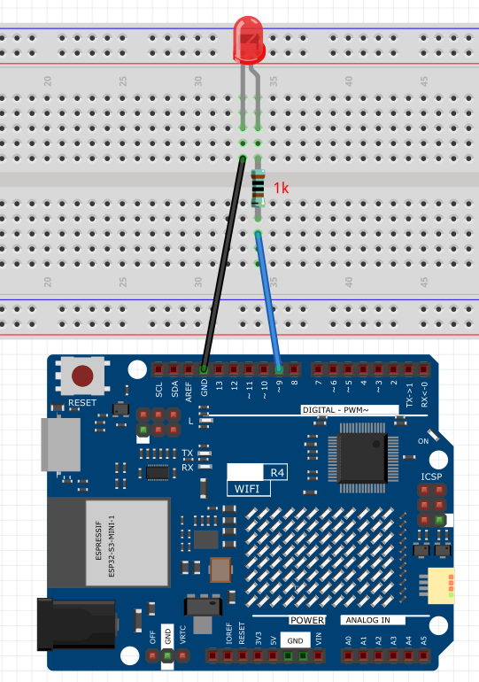
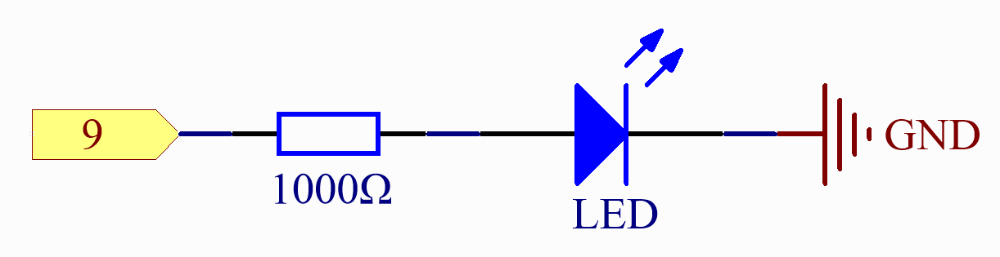

LED Blink
Just as printing “Hello, world!” is the first step in learning to program, using a program to drive an LED is the traditional introduction to learning physical programming.
Wiring
{kind=link}
Schematic Diagram
{kind=link}
Code
Note
You can open the file
01_LED_Blink.inounder the path ofBasic-Starter-Kit-for-Arduino-Uno-R4-WiFi-main\Code.
After the code is uploaded successfully, you will see the LED connected to digital pin 9 of the Arduino board start to blink. The LED will turn on for half a second and then turn off for another half a second, repeating this cycle continuously as the program runs.
Code Analysis
Here, we connect the LED to the digital pin 9, so we need to declare an int variable called ledpin at the beginning of the program and assign a value of 9.
const int ledPin = 9;
Now, initialize the pin in the setup() function, where you need to initialize the pin to OUTPUT mode.
void setup() {
pinMode(ledPin, OUTPUT);
}
In loop(), digitalWrite() is used to provide 5V high level signal for ledpin, which will cause voltage difference between LED pins and light LED up.
digitalWrite(ledPin, HIGH);
If the level signal is changed to LOW, the ledPin’s signal will be returned to 0 V to turn LED off.
digitalWrite(ledPin, LOW);
An interval between on and off is required to allow people to see the change,
so we use a delay(1000) code to let the controller do nothing for 1000 ms.
delay(1000);